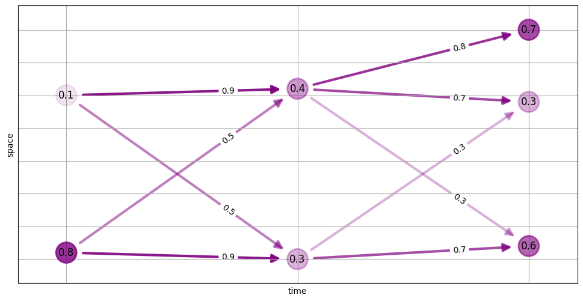

Quickstart¶
(click here to see the plotting code we use in this tutorial)
import matplotlib.pyplot as plt
import motile
import networkx as nx
def draw_track_graph(graph, solver=None):
num_nodes = graph.number_of_nodes()
frames = list(range(*graph.get_frames()))
positions = {
node: (data['t'], data['x'])
for node, data in graph.nodes(data=True)
}
colors = ['purple'] * num_nodes
if solver is not None:
node_indicators = solver.get_variables(NodeSelected)
edge_indicators = solver.get_variables(EdgeSelected)
for node, index in node_indicators.items():
graph.nodes[node]['selected'] = solver.solution[index] > 0.5
for edge, index in edge_indicators.items():
graph.edges[edge]['selected'] = solver.solution[index] > 0.5
alpha_attribute = 'score' if solver is None else 'selected'
node_alphas = [
data[alpha_attribute]
for _, data in graph.nodes(data=True)
]
edge_alphas = [
data[alpha_attribute]
for _, _, data in graph.edges(data=True)
]
node_labels = {
node: data['score']
for node, data in graph.nodes(data=True)
}
edge_labels = {
(u, v): data['score']
for u, v, data in graph.edges(data=True)
}
fig = plt.figure()
fig.set_figheight(6)
fig.set_figwidth(12)
nx.draw_networkx_nodes(
graph,
positions,
alpha=node_alphas,
node_size=600,
linewidths=2.0,
node_color=colors)
if solver is None:
nx.draw_networkx_labels(
graph,
positions,
node_labels)
nx.draw_networkx_edges(
graph,
positions,
alpha=edge_alphas,
width=3.0,
arrowsize=20,
node_size=600,
min_source_margin=20,
min_target_margin=20,
edge_color='purple')
if solver is None:
nx.draw_networkx_edge_labels(
graph,
positions,
edge_labels,
label_pos=0.3)
plt.xlabel("time")
plt.ylabel("space")
plt.grid(True)
plt.xticks(frames, frames)
plt.show()
